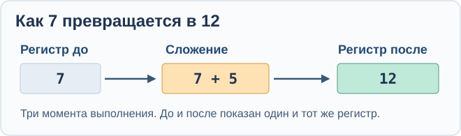

Что такое переменная
Переменная позволяет программе сохранить значение и позже обратиться к нему по имени. Допустим, мы считаем сумму двух чисел. Получили первое число — нужно запомнить его до того момента, когда прибавим второе. Назовём текущую сумму sum.
int sum = 7;
sum = sum + 5;
Прочитаем первую строку слева направо. int задаёт тип — будем хранить целое число. sum — имя, которое мы выбрали для переменной. 7 — её начальное значение. Когда переменной задают значение при создании, это называют инициализацией.
Во второй строке = означает присваивание. Сначала программа вычисляет правую часть, используя текущее значение. Затем записывает результат в переменную слева.
Как процессор складывает числа. Регистр — маленькое хранилище внутри процессора. Если текущее значение уже в регистре, команда сложения может взять оттуда 7, прибавить 5 и вернуть 12 в тот же регистр. Читать оперативную память для каждого присваивания при этом не требуется.

Компилятор выбирает команды с учётом окружающего кода. В этом коротком примере оба числа известны заранее, поэтому он может сразу подставить 12. Так что по имени sum в исходном тексте нельзя определить конкретный регистр или адрес. Как процессор выполняет команды.
Следующая строка с именем sum прочитает уже 12. Если написать внутри функции просто int sum;, начального числа у нас ещё нет. Чтобы накапливать сумму с нуля, пишут int sum = 0;.
Что произойдёт, если запомнить сумму под другим именем?
int sum = 7;
int saved = sum;
sum = sum + 5;
| Выполненная строка | sum |
saved |
|---|---|---|
int sum = 7; |
7 | ещё не создана |
int saved = sum; |
7 | 7 |
sum = sum + 5; |
12 | 7 |
При создании saved программа один раз прочитала sum и скопировала число. Теперь у каждой переменной своё место для значения. В терминах C++ это два отдельных объекта.
Иногда нужны два имени для одного объекта. Для этого в C++ есть ссылка. Продолжим пример после последней строки таблицы.
int& current = sum;
current = 20;
Теперь и sum, и current дают 20. Обращаясь по любому из этих имён, мы читаем или меняем одно число. В saved по-прежнему хранится 7.
Когда копия перестаёт совпадать с оригиналом?
Сохрани текущее значение sum в saved, затем прибавь число к сумме. Предскажи, что покажет каждая переменная.
int sum = 7;Как выбрать тип?
| Что храним | Пример объявления |
|---|---|
| Количество элементов | int count = 7; |
Целое число, которое может превысить диапазон int |
long long total = 3'000'000'000LL; |
| Число с дробной частью | double weight = 1.25; |
| Ответ «да» или «нет» | bool found = false; |
| Один символ базового набора | char letter = 'A'; |
| Строку текста | std::string word = "abc"; из <string> |
При выборе типа учитывай промежуточный результат. Например, сторона квадрата равна 100 000. На платформе с 32-битным int сторона помещается в этот тип, а площадь 10 000 000 000 уже выходит за его диапазон.
int side = 100'000;
long long area = 1LL * side * side;
Здесь 1LL — единица типа long long. С ней оба умножения выполняются в широком типе. Если записать только long long area = side * side;, умножение двух int переполнится ещё до присваивания.